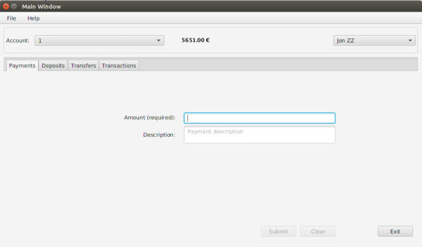
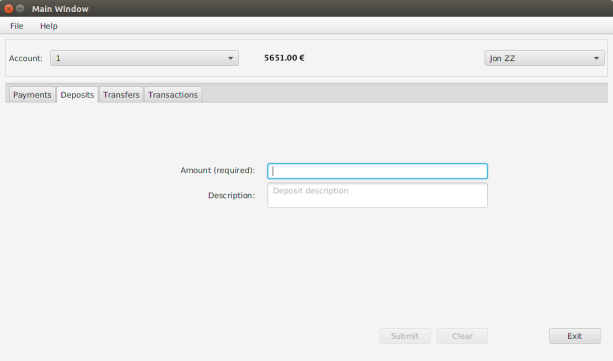
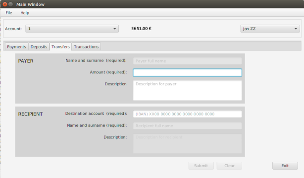

Help: Banking Application
General
The application allows control of customer's banking operations. The user can check all her accounts, make payments, deposits and transfers, and check any past transactions. The application also gives the user the opportunity to create a report of the accounts past activity.
Functionality
Make payments
Making a payment is easy: fill the amount field and press the Submit button. If the user feels like it, she also can add a description to keep record of the payment.
Make deposits
Making a deposit is easy: fill the amount field and press the Submit button. If the user feels like it, she also can add a description to keep record of the deposit.
Make transfers
Making a transfers is easy: fill the amount field and the recipient account, and press the Submit button. If the user feels like it, she also can add a description to keep record of the transfer.
View transactions
The transactions tab makes checking the account past activity easy. By default, all past activity is loaded. The user can toggle filters on and off to filter the transaction list. Clicking a record on the list shows more detailed information about the selected transaction.
Print reportReport button in the file menu option of the menu bar prints a report with the current account's past activity.
Exit the applicationWhen the Exit button is pressed, the application closes. There is also a close item in the menu bar.
HelpPress the Help option in the menu bar.